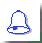

Ortografía y Lenguaje
Ortografía. Dentro de la gramática de una lengua, la ortografía enseña a escribir con corrección las ideas expresadas a través de las palabras. Es decir, la palabra "ortografía" es sinónimo de "correcta escritura". También se dice que es el arte de emplear bien las letras y los demás signos de la escritura.
La ortografía, como todo conocimiento, sólo se asimila mediante la práctica permanente de la lectura y redacción. No es leer por el solo disfrute, es analizar la anatomía de las palabras, es la curiosidad con que se debe ver cada vocablo. El uso del diccionario es un elemento ideal para aprender la ortografía de las palabras.
Lenguaje. Es la facultad de comunicación del hombre cuando entra en contacto con sus semejantes por medio de signos fónicos, gráficos o mímicos. De ello se deduce que el lenguaje es un sistema de signossig_1..
El signo lingüístico es la combinación de signos fónicos (lenguaje oral que puede ser dado en distintos idiomas) con la representación que dichos signos tenga en la mente de la persona que habla.
El signo fónico es el llamado significante y la representación es el significado.
La unión del significante y el significado forman el signo lingüístico. De ello se desprende que un solo significante puede admitir multitud de representaciones tantas como idiomas y formas de comunicación puedan existir.
Los significantes a su vez pueden ser de dos maneras: fónicos, cuando el lenguaje es hablado y escritos cuando utilizamos los signos gráficos para representar los distintos signos fónicos..
Signos son cosas previamente convenidas que crean en nuestro entendimiento la forma, la manera de ser o el nombre de otras cosas. Por ejemplo las señales de tránsito.
Lengua y habla
Lengua: Es todo sistema de signos, propio de una determinada comunidad lingüística; esto es, un conjunto de hombres que hablan un mismo idioma. Hay tantas comunidades lingüísticas como lenguas se hablan en el universo y no obligadamente coinciden con el concepto de nación.
Por ejemplo, la comunidad lingüística española está formada por más de 100 000 000 de personas en distintos países del mundo, distribuidos en varios continentes y espacios geográficos.
Habla: Es la forma personal de expresión de una comunidad o grupo de individuos. Se diferencia de la lengua en que no puede ser resumida como ésta en gramáticas, por lo tanto no se puede enseñar. Hay tantas clases de hablas dentro de una lengua como familias, profesiones o grupos de individuos hacen uso de dicha lengua. Así el hablahab_1. distingue a un hablante o a una pequeña comunidad de hablantes entre sí.
El habla se conforma de acuerdo con el ambiente, medio social, profesión e incluso temperamento, cultura, estado de ánimo etc. de quien la ejerce.
Ortografía versus ortología
Ortología: Es el arte de pronunciar bien.
La ortología tiene cuatro partes:
- la primera nos enseña lo concerniente a los sonidos elementales
- la segunda lo concerniente a los acentos
- la tercera son las reglas para distinguir las combinaciones de vocales que forman diptongos y triptongos
- la cuarta nos da el modo de aplicar a la versificación castellana los principios ortológicos.
Ortografía: Es el arte de emplear bien las letras y los demás signos de la escritura.
Para dominar la ortografía resulta básico saber que el alfabeto castellano consta de las siguientes letras: a, b, c, ch, d, e, f, g, h, i, j, l, ll, m, n, ñ, o, p, q, r, s, t, u, v, x, y, z.
La k y la w son letras pertenecientes a otros idiomas pero se usan ocasionalmente en el castellano.
«--ir al comienzo de la página
Unidades Fónicas
Sonidos
Los sonidos son unidades fónicas producidas por la persona que habla.
Corresponden al plano del habla.
Los sonidos se pueden combinar y dar lugar a unidades fónicas superiores para lograr la comunicación.
El número de sonidos de una lengua es ilimitado.
La fonética es la ciencia que estudia los sonidos.
Signos fónicos
Fonemas
Son las más pequeñas unidades fonológicas dentro del sistema de una lengua. Los fonemas pertenecen al plano de la lengua. El número de fonemas de una lengua es limitado.
Por ejemplo, la palabra madero consta de seis fonemas: m- a- d- e- r- o.
La fonología estudia todo lo referente a los fonemas y su función dentro de una lengua.
Fonemas vocálicos
Hay cinco fonemas vocálicos en castellano: a- e- i- o- u.
Los fonemas vocálicos se llaman también vocales porque son producidos por las simples vibraciones de las cuerdas vocales, sin que el aire expulsado encuentre obstáculo alguno en su salida. Todos son orales, es decir, emplean la boca como cavidad de resonancia en su emisión.
Fonemas consonánticos
Son los demás fonemas en castellano. Reciben también el nombre de consonantes, que son aquellas que se producen no sólo con la vibración de las cuerdas vocales, sino con la participación de distintos órganos integrantes del aparato de fonación.
Por ejemplo, consonantes como la b y la p exigen la intervención de los labios, por eso son bilabiales y uno observa cómo estos se abren repentinamente al ser emitida la voz.
Otras, como la t y la d se producen cuando la lengua roza con los dientes superiores y por eso se llaman dentales.
Diptongos
Cuando en una misma sílaba coinciden una vocal cerrada y una abierta o dos cerradas se produce lo que llamamos un diptongo. Esto es muy importante a efectos ortográficos: las vocales de un diptongo no pueden separarse nunca.
Las vocales cerradas o débiles son i y u. Las vocales abiertas o fuertes son a, e, o.
Los diptongos pueden ser: crecientes, decrecientes e indecisos.
Triptongos
Es la combinación de tres fonemas vocálicos dentro de una misma sílaba. Dos de estos tres fonemas han de ser cerrados. Son iai, iei, uai y uei.
Ejemplos: acariciáis, estudiéis, Paraguay, Camagüey, buey.
Los triptongos nunca se separan.
El Hiato
Es cuando se produce el encuentro de dos vocales que obligadamente deben pronunciarse en sílabas distintas.
Ejemplo:
- Caer ca-er
- Aéreo a-é-re-o
- Reúnen re-ú-nen
- Raúl Ra-úl
Este encuentro de vocales puede ser entre una vocal cerrada o débil, que siempre lleva tilde, y una vocal abierta o fuerte. También puede darse el caso de que el encuentro sea entre dos vocales abiertas o fuertes una, de las cuales puede llevar tilde o no. En resumen, el hiato es la reunión de dos vocales que no constituyen diptongo.
«--ir al comienzo de la página
Signos gráficos. Grafemas
Son unidades mínimas e indivisibles de la escritura de una lengua.
Inadecuaciones fónico-gráficas: Aquellos que usan el idioma español como lengua para la comunicación, enfrentan sistemáticamente dudas en la ortografía de determinadas palabras. La causa fundamental reside en que en muchas regiones se han producido variaciones fónicas de sonidos dados, esto ocurre de manera particular en Hispanoamérica.
Este es el caso del sonido [s] para algunos términos que se escriben con z. Como ejemplo citamos zapato, derechazo, azogue, etc.; en su pronunciación ocasiona la duda a quien escribe y es, por tanto, importante en la ortografía de la lengua castellana tener en cuenta estas inadecuaciones.
Sílabas
Al grupo fónico más sencillo se le llama sílaba. Es un conjunto de fonemas o sonidos pronunciados a la vez entre dos pausas. La parte de una palabra que se puede separar de las demás, pero no se puede dividir sin alterar los sonidos de que consta, es una sílaba.
En castellano las vocales pueden formar por sí solas una sílaba. Las consonantes no, (a excepción de la y) porque precisan el apoyo de una vocal para ser pronunciadas.
Cada sílaba exige un esfuerzo muscular e impone una pausa imperceptible antes de dar comienzo a la emisión de la sílaba siguiente.
Por ejemplo, la palabra banquete se descompone en ban-que-te
Construcción de las sílabas:
- Las sílabas pueden estar formadas por una consonante más una vocal, por ejemplo, pi-ja-ma.
- Pueden empezar por vocal y luego consonante, por ejemplo, or-ques-ta.
- O bien están formadas por una consonante, una vocal y otra consonante, por ejemplo, ban- que- te.
- También algunas consonantes se aglutinan antes de la vocal, por ejemplo, gla-dia-dor o van después de la vocal, por ejemplo, ins-truc-ción.
División de la sílaba:
Las palabras que tienen una sola sílaba se llaman monosílabas, las de dos sílabas son bisílabas, las de tres, trisílabas y las que tienen cuatro o más, sílabas son polisílabas.
Sílaba tónica:
La sílaba sobre la que recae el acento tónico recibe el nombre de sílaba tónica.
El acento tónico es la mayor intensidad con que pronunciamos una determinada sílaba de una palabra. Las sílabas que no poseen acento tónico se llaman átonas.
«--ir al comienzo de la página
Palabras
Desde el punto de vista fónico, la palabra está formada por un conjunto de fonemas (cuando estos constituyen una sola sílaba como pan, mar, Dios) o por un conjunto de sílabas, por ejemplo, caminante; ca-mi-nan-te (cuatro sílabas).
Dentro de una conversación o de un texto, la palabra tiene un significado concreto, significado que guarda relación con las otras palabras que están a su alrededor. Tiene una forma y una función dentro del texto en que se encuentra.
Hay palabras cuya forma es siempre la misma, ejemplo: dos, que, por.
Otras presentan hasta cuatro variaciones en la forma: muchacho, muchacha, muchachos, muchachas.
Estas palabras cuya forma varía, constan de dos elementos: uno invariable, semantema, lexema o morfema léxical y otro variable, que se llama morfema.
Semantema morfema
Muchach a, o, os, as
El morfema puede ser: derivativo o desinencial como el género, el número, el grado, el tiempo, el modo y el aspecto.
Semantema morfema derivativo
Mar ino
Semantema morfema desinencial
Barc os
El morfema es una parte de la palabra que no puede ser dividida. Se pueden anteponer o posponer a la palabra para formar familias. Esta clase de morfemas son los afijos (prefijos si van delante y sufijos si se colocan detrás), ejemplos:
Prefijo aclarar declarar
Sufijo claramente claridad
Otros morfemas son las terminaciones, o para el masculino, a para el femenino y s, o es para el plural del nombre. Hay un morfema exclusivo del nombre que es el artículo (el, la, lo, los, las).
Clases de palabras: Las palabras pueden ser derivadas, compuestas y parasintéticas.
Palabras derivadas: Son aquellas que se forman a partir de palabras primitivas cuando se les adicionan prefijos o sufijos.
Ejemplo:
mar (palabra primitiva)
(palabra primitiva) + (sufijo) -> mar+ino -> palabra derivada
sílaba (palabra primitiva)
(prefijo) + (palabra primitiva) -> bi+sílaba -palabra derivada
Palabras compuestas: Son aquellas que están formadas por dos o más palabras primitivas,
Ejemplos:
bienvenido bien + venido
abrelatas abre + latas
Palabras parasintéticas: Se llama parasíntesis a la creación de palabras a partir de la composición y la derivación.
Ejemplo:
ropavejero= ropa + viejo + ero (sufijo).
Juntas o separadas: Existen voces que siempre deben escribirse separadasinteract_3.19., otras forman una sola palabrainteract_3.20. y hay otras que forman una o dos palabrasinteract_3.21., según los casos.
«--ir al comienzo de la página
Palabras separadas
Se escriben separadas:
- a cuestas
- por fin
- en efecto
- entre tanto
- a pesar
- a propósito
- en fin
- no obstante
- a menudo
- a bordo
- sin embargo
- por tanto
- de sobra
- so pena
- so pretexto
- de prisa
Palabras compuestas
Hay voces que forman una sola palabra compuesta:
- bocacalle
- adentro
- contraorden
- adonde
- anteanoche
- enfrente
- aprisa
- aparte
- anteayer
- abajo
- bocamanga
- alrededor
- anteojo
- bienvenida
- apenas
- confín
- sobremesa
- antemano
- detrás
- hazmerreír
- mapamundi
- afuera
- sobrenombre
- ultramar
- verbigracia
- adondequiera
- antebrazo
- cuentagotas
- correveidile
- dondequiera
Una o dos palabras
Hay voces que forman una o dos palabras según el caso:
Porque: Una sola palabra, cuando significa por causa o razón de que.
No voy a la fiesta porque estoy enfermo.
porque: Una sola palabra cuando significa para que.
No te acompaño porque no me vean.
por que: Dos palabras cuando entre el por y el que puedo poner el artículo el, la, los, las, etc.
Han sido difíciles los momentos por que han pasado (por los que han pasado).
Son muchas las razones por que me veo así (por las que me veo así).
Porqué: una sola palabra, y además acentuada, cuando significa causa, motivo, razón.
Ignoro el porqué de tu negativa.
En esta oración puedo sustituir el porqué con cualquiera de las tres palabras antedichas. Así, ignoro el motivo de tu negativa, la razón, la causa de tu negativa.
Por qué: Dos palabras en frases u oraciones interrogativas directas o indirectas.
¿Por qué no vienes?.
No sé por qué no has de venir.
Sino, si no: Cuando entre el si y el no podemos intercalar una palabra, diremos con certeza que hay dos palabras.
No me has esperado sino que te has marchado. Aquí no podemos intercalar palabra alguna; pero en la oración: si no llegas a tiempo, perderás el tren, puedo intercalar, ahora, mañana, etc., diciendo: Si ahora o mañana no llegas a tiempo, perderás el tren.
Con que: Es una dicción cuando significa así que, de manera que.
¿Conque fumas?, ¿conque ya los tienes?, oraciones equivalentes a estas otras: ¿De manera que fumas?, ¿así que los tienes?
Con que: Se escribe separado en los casos:
Esta es la pluma con que escribo = Esta es la pluma con la que escribo.
Con qué: Se escribe separado y con acento cuando significa: instrumento, cosa.
¿Con qué abriré la puerta? ¿Con qué escribes, Félix?
También: Se escribe junto y con acento cuando significa afirmación.
También Pedro va a la escuela. ¿Tú también, hijo mío?
Tan bien: Se separa cuando se emplea como modo, comparación.
Estoy tan bien como en mi propia casa. Tan bien se encontraban, que no querían venir.
Tampoco: Se escribe junto cuando significa una negativa:
Tampoco ese libro me gusta.
Tan poco: Se separa cuando se emplea como comparación:
Tan poco vale el uno como el otro. Tan poco papel le dieron que no pudo dibujar.
Sinnúmero: Cuando significa infinidad, se escribe como una sola palabra:
Había un sinnúmero de fardos marcados.
Sin número: Me he quedado sin número para la rifa. Algunos fardos estaban sin marcar y sin número (Significa en este caso sin numerar).
Sinfín: Cuando se emplea como innumerable:
He visto un sinfín de personas.
Me dio un sinfín de detalles.
Sin fin: Separado cuando es negación:
Es un principio sin fin; esto es, que no tiene fin.
Porvenir: Como sustantivo:
Me interesa tu porvenir.
Por venir: Separado cuando indica causa, motivo:
Por venir tarde no asistirás al reparto.
Pormenor: Como detalle:
No quiero entrar en pormenores.
Por menor: Cuando explica porque, como la causa de:
Por menor no te condenan. Por menor abusas de mí.
Sobretodo: Como prenda de vestir:
El sobretodo es más ligero que el gabán.
Sobre todo: Separado cuando significa ante todo:
Sobre todo, estudia la ortografía.
Mediodía: No se separa en su significado como hora, viento, punto cardinal:
Espérame hasta el mediodía, o sea, hasta las doce. Está situada al mediodía de tu casa.
Medio día: Trabajaremos medio día.
Santabárbara: En su significado como pañol o lugar destinado en las embarcaciones para custodiar la polvora:
Estalló la santabárbara del buque.
Santa Bárbara: Santa Bárbara es la Patrona de los artilleros.
Asimismo: Como igualmente, también:
Asimismo he de decirte que vengas.
Así mismo: Se separa en su significado como de esta manera:
Hagamos así mismo, tal y como yo digo.
A sí mismo: A uno mismo, por ejemplo:
Conocerse a sí mismo es una gran ventaja.
«--ir al comienzo de la página
El acento
Tipos de acento
El acento tiene que ver con el esfuerzo que se hace sobre una sílaba al pronunciar una palabra. Puede ser fonético, o prosódico u ortográfico. Para poder escribir adecuadamente hay que conocer las definiciones siguientes sobre los distintos tipos de acento.
Acento prosódico
Llamamos acento prosódico a la mayor fuerza con que pronunciamos una sílaba dentro de la palabra, destacando aquella en relación a las otras sílabas que la forman.
En las palabras siguientes las sílabas destacadas llevan el acento prosódico
colombiano venezolano salvadoreño 
ecuatoriano hondureño panameño
Acento ortográfico
Hablamos de acento ortográfico cuando la fuerza de la pronunciación va marcada con una tilde. Al signo ( ´ ) se le llama tilde o acento. Muchas veces coinciden el acento prosódico y el ortográfico. Por ejemplo, en las palabras:
Andrés pasión mecanógrafa
Acento diacrítico
Existen ciertas palabras cuyo sonido es idéntico pero tienen distinto significado, en ese caso se utiliza la tilde para la acentuación de palabras y se define el denominado acento diacrítico. Por ejemplo:
él - el
Acentúa la palabra él, si es pronombre.
Ejemplos: él lo dice, él lo sabía, etc.
No acentúes la palabra el, si es artículo.
Ejemplos: el libro, el niño, etc.
tú - tu
Acentúa tú, si es pronombre. Ejemplos: Tú lo sabes; Tú también vendrás, etc.
No acentúes tu, si es adjetivo. Ejemplos: tu libro, tu amigo, etc.
Agudas, graves y esdrújulas
Las palabras pueden ser:
Agudas:si llevan el acento prosódico u ortográfico en la última sílaba
Graves o llanas: si llevan el acento prosódico u ortográfico en la penúltima sílaba.
Esdrújulas: si lo llevan en la antepenúltima
Sobreesdrújulas: si lo llevan en una sílaba anterior a las tres últimas.
No todas las palabras exigen la ortografía de la tilde salvo las esdrújulas y sobreesdrújulas, que siempre hay que marcársela.
Por ejemplo:
| Agudasson_3. | Gravesson_4. | Esdrújulasson_5. | Sobreesdrújulasson_6. |
| cartón | libro | bárbaro | cuéntaselo |
| estarás | difícil | mármoles | cantándomela |
| atraer | matriarcado | cantándome | sírvanmelo |
«--ir al comienzo de la página
Reglas de acentuación
Las actuales normas de acentuación fueron dictadas por la Academia de la Lengua en 1952 y entraron en vigencia definitiva el primero de enero de 1959.
Palabras agudas.
Llevan tilde las palabras agudas terminadas en vocal, n ó s.
{ewl MVIMG, MVIMAGE, FOTOS\camp.bmp}son_7.
Ejemplo:
- cal-cu-ló, An-drés, después.
Las palabras agudas terminadas en consonantes que no sean n ó s no llevan tilde.
{ewc MVIMG, MVIMAGE, FOTOS\camp.bmp}son_8.
Ejemplo:
- Be-a-triz, reu-nir, an-te-rior.
Palabras graves.
Llevan tilde las palabras llanas o graves terminadas en consonantes que no sean n ó s.
{ewc MVIMG, MVIMAGE, FOTOS\camp.bmp}son_9.
Ejemplo:
- ár-bol, án-gel, ám-bar, Pá-ez.
No llevan tilde las palabras llanas o graves terminadas en vocal, o en n ó s.
{ewl MVIMG, MVIMAGE, FOTOS\camp.bmp}son_10.
Ejemplo:
- e-xa-men, cal-do, i-ma-gen.
Palabras esdrújulas
Todas las palabras esdrújulas llevan tilde.
Ejemplos:
{ewc MVIMG, MVIMAGE, FOTOS\camp.bmp}son_11.
Án-ge-la, pér-di-da, a-é-re-o, lí-ne-a.
Tilde diacrítica
Casos de tilde diacrítica opcional.
Hay doce casos que pueden o no llevar tilde cuando son pronombres. Este es el caso de:
este, esta, ese, esa, aquel, aquella, estos, esos, aquellos, estas, esas, aquellas.
Estos llevan tilde si son pronombres y nunca la llevan si son adjetivos.
Sin tilde
Este niño ese libro aquel día esa mesa
Con tilde
éste no acudió, ésa pensaba ir aquél comió poco, ésos cantaban.
Esto, eso y aquello son pronombres neutros y nunca llevan tilde.
Esto quedó bien.
Aquello me gusta.
Monosílabos
Los monosílabos nunca se tildan, ejemplo: vio, fue, pie, fin, ve, da.
Aunque debe observar los casos de acento diacrítico y visualinteract_5.6..
Monosílabos. Excepciones
Observe los siguientes casos de acento diacrítico y ortográfico:
Tú como pronombre. Ejemplo: Tú volverás.
Él como pronombre. Ejemplo: Él se fue.
Mí como pronombre. Ejemplo: Es para mí.
Sí como adverbio. Ejemplo: Sí firmó los contratos.
Sí como pronombre. Ejemplo: Volvió en sí.
Dé como forma verbal (dar). Ejemplo: Que le dé la información.
Sé como forma verbal (ser o saber). Ejemplo: Sólo sé que te vas.
Té como sustantivo. Ejemplo: Está dulce el té. Te, pronombre, no se tilda.
Más como adverbio, adjetivo y pronombre de cantidad.
Ejemplos: Vive más lejos. Es más alto que tú. Quiero más comida.
Qué interrogativo y admirativo: ¿Qué te pasa? ¡Qué fuerza!.
Quién interrogativo y admirativo: ¿Quién fue? ¡Quién lo creerá!.
Cuál interrogativo y admirativo: ¿Cuál de ellos?.
Cuán interrogativo y admirativo: ¡Cuán grande es!.
La conjunción o se tilda cuando va al lado de un número arábigo, para que no se confunda con el cero:
Ejemplo: Apartamento de 3 ó 4 alcobas.
«--ir al comienzo de la página
Palabras compuestas
Las palabras compuestas conservan el acento del último componente:
Ejemplo:
Décimo + séptimo = decimoséptimo
Balón + cesto = baloncesto
Ejemplos de acentuación de palabras compuestas
Algunos monosílabos (los cuales por serlo no llevan tilde) se acentúan al pasar a formar parte de una palabra compuesta si ésta es aguda y termina en vocal o en n o s.
Ejemplo:
Punta + pie = puntapié
Para + bien = parabién
Veinte + y + seis = veintiséis.
Si hay guión cada componente conserva su acento.
Ejemplo:
- Árabe-israelí, García-Peña, colombo-venezolano.
En los adverbios terminados en mente se conserva el acento de la palabra de la cual se derivan:
- Fría fríamente
- Técnica técnicamente
- Temporal temporalmente.
En verbos con pronombre enclíticointeract_5.8.1. se conserva el acento del verbo. Si hay tilde, se mantiene la tilde.
Ejemplo:
- Dé déme, déles, dénos, déla
- Dispón dispónte, dispónme, dispónlo
- Canta cántame, cántala
Las palabras compuestas son las únicas situaciones que dan lugar a palabras sobreesdrújulas.
Ejemplo:
- Cántamela: de canta + me + la.
- Rómpeselos: de rompe + se + los.
Palabras de doble acentuación
Puedes encontrar también palabras que tienen doble acentuación porque se pueden pronunciar de las dos maneras.
Por ejemplo:
- fútbol, futbol
- policíaco, policiaco
- atmósfera, atmosfera
- gladíolo, gladiolo
- cóctel, coctel
Solo y sólo
Se usa tilde en el adverbio sólo (observa que puede sustituirse por solamente) para distinguirlo del adjetivo solo (no acompañado).
La tilde es obligatoria cuando se refiere al masculino del singular.
Ejemplo:
- Juan solo bebe. (Nadie lo acompaña)
- Juan sólo bebe. (No hace otra cosa)
- En los ejemplos siguientes no lleva tilde.
- Ignacio vino solo a verme (nadie lo acompañó).
- Ignacio vino sólo a verme (solamente a verme).
Interrogativos y admirativos
Llevan tilde qué, quién, cuál, cuán, cómo, cuándo, cuánta, cuántos, cuántas, quiénes, cuáles, dónde y adónde cuando son interrogativos o admirativos.
Ejemplos:
- ¿Ya sabes quiénes vendrán a la reunión?
- ¿Cuándo vienes a almorzar?
- Cuán grande fue ese pueblo.
- Tenga la bondad de decirme cuánto debo esperar.
Cómo marcar tildes
Para acertar en la marcación de tildes, siga los pasos siguientes:
- Primero: Separar por sílabas la palabra.
- Segundo: Establezca cual de las sílabas lleva el acento.
- Tercero: Consulte las reglas de acentuación.
Separar por sílabas las palabras.
Cada vocal fuerte (a, e, o) forma sílaba distinta:
a é-re-o, o-ro-pel, pe-tró-le-o.
Vocales débiles (i, u) forman a veces sílabas distintas (chi-í-.ta) y a veces una sola sílaba o diptongo (fui-mos, cui-da-do, ciu-dad).
Vocal fuerte (a, e, o) predominante y vocal débil (i, u) unidas forman una sola sílaba o diptongo:
die-ci-séis, mons-truo, reu-nión, cua-tro-cien-tos.
Vocal fuerte (a, e, o) en medio de vocales débiles (i,u) forman una sola sílaba o triptongo:
U-ru-guay, es-tu-diáis.
La doble ere (r) no se separa:
vi-ce-rrec-tor y no vi-cer-rec-tor.
La doble ce (cc) se separa: co-rrec-ción y no co rre-cción.
Cuál de las sílabas Ileva el acento.
Pronuncie las palabras en voz alta e identifique la sílaba más fuerte, es decir, la que tiene el acento:
a-con-te-ci-mien-to, Car-ta-ge-na, de-ci-mo-ter-ce-ro, re-co-rrer, des-truc-ción.
Recuerde que todas las palabras tienen acento (prosódico), pero sólo algunas tienen tilde.
Consulte las reglas de acentuación.
Observe si la palabra es aguda, grave, esdrújula o sobreesdrújula. De resultar necesario revise las normas para la tilde en el caso de: tilde diacrítica opcional, monosílabos, palabras compuestas, palabras de doble acentuación, interrogativos y admirativos y el uso de solo y sólo.
«--ir al comienzo de la página
Grafemas
Alfabeto castellano
El alfabeto español consta de veintinueve letras, de .las que cinco son vocales: A, E, I, O, U. Todas las demás son consonantes.
El alfabeto consta de las siguientes letras: a, b, c, ch, d, e, f, g, h, i, j, l, ll, m, n, ñ, o, p, q, r, s, t, u, v, x, y, z.
La k y la w son letras pertenecientes a otros idiomas pero se usan ocasionalmente en el castellano.
Es conveniente conocer el alfabeto. Las personas que ignoran esta sucesión de letras no pueden manejar una guía de teléfonos, un diccionario, etc.
«--ir al comienzo de la páginaInadecuaciones fónico - gráficas
El seseo entre los hispanohablantes.
Cuando pronunciamos la c -ce, ci- o la z -za, ze, zi, zo, zu- como s seseamos.
El seseo (acción y efecto de sesear) , es académicamente correcto en la pronunciación, aunque no en la escritura.
Sesean la mayoría de los hispanohablantes en América; sesean también los andaluces, extremeños , murcianos, alicantinos y canarios en España.
El seseo es, pues, correcto en la pronunciación; se considera como hecho lingüístico irreversible, sin posibilidad de vuelta en el idioma.
El Segundo Congreso de Academias de la Lengua Española, celebrado en Madrid en mayo de 1956, aprobó la ponencia sobre el seseo presentada por el destacado filólogo cubano doctor Adolfo Tortoló.
A partir de entonces el seseo dejó de ser considerado como un vicio de dicción.
Paralelamente a los hablantes que sesean, los hay que distinguen en la pronunciación, como en la escritura, la c y z de la s.
Confundir la c, la z y la s en la escritura es un error ortográfico.
El yeísmo
El pronunciar la ll como y (el yeísmo) es un hecho lingüístico muy extendido en España y por países de América de habla española.
La Academia de la Lengua admite ya como correcta esta pronunciación (Boletín de enero abril de 1968)
Pero no es permitido admitir en la escritura una letra por otra:
Ejemplos:
- gayina por gallina
- Poyo por pollo
- Castiyo por castillo
- Aniyo por anillo
- Hayar por hallar
- Yeno por lleno
- Caye por calle
- Pastiya por pastilla.
La h
La h no es un fonema, no es un sonido. Es solo una letra que hemos heredado de las lenguas que dieron vida al castellano. Muchas palabras se escribían originariamente con h y éstas han seguido conservándola en castellano. Así todas las personas del verbo haber, en todos los modos y tiempos deben llevar h.
La x
La x tiene un sonido doble, equivalente a ks o gs como en axioma o excelso.
La g y la j
La letra g acompañada de las vocales a, e, o, produce un sonido sonoro suave.
Ejemplos: goma, gamo, guardia.
La g acompañando a la l y la r produce también un sonido suave y aglutina las consonantes que la siguen.
Ejemplos: gloria, grueso, grito.
La g acompañando a otra consonante (que no sea la l o la r) produce un sonido sonoro.
Ejemplos: dogma, impregnar.
La g acompañando a la e y la i produce un sonido sordo idéntico al de la j.
Ejemplos: gente, giran.
La b y la v
La b y la v se pronuncian igual en castellano porque representan a un único fonema.
La distinción es puramente ortográfica.
Uso de las letras b - v
Si quieres escribir correctamente, además del Diccionario de voces de dudosa ortografía, debes conocer las reglas para el uso de grafemas.
«--ir al comienzo de la página
Uso de las letras
Uso de la b y la v
Uso de la b
Escribe con b las combinaciones br y bl seguidas de vocal. Ejemplos: abre, brazo, libro, diablo, blando.
Escribe con b la terminación bilidad. Ejemplos: amabilidad, habilidad, culpabilidad. Son excepciones civilidad, de civil, y movilidad, de mover.
Escribe con b los principios de palabra ab, ob y sub. Ejemplos: absoluto, objeto, subrayar.
Escribe con b las terminaciones aba, abas, ábamos, abais, aban, del pretérito imperfecto de indicativo de los verbos terminados en ar. Ejemplos: estudiaba, estudiabas, estudiábamos, estudiabais, estudiaban, de estudiar.
Además, iba, ibas, íbamos, ibais, iban, del verbo ir. Las otras formas de este verbo, cuando haya lugar a ello, llevan v: voy, vas, va, vamos, van.
Escribe con b antes de u. Ejemplos: bueno, abunda, abuelo, vagabundo. Son excepciones: vulgo, válvula, convulsión, vulnerar, vuelvo de volver, vuelco de volcar, vuelo de volar, vulcanizar, párvulo, y naturalmente, los afines respectivos.
Escribe b en el sonido bi, bis, o biz, cuando significa dos o doble. Ejemplos: bisílaba, bisabuelo, biznieto.
Escribe b en todas las formas verbales que provienen de infinitivos terminados en bir. Ejemplos; escribimos, de escribir, subían, de subir. Excepciones: servir, hervir y vivir, con todos sus afines.
Escribe con b los sonidos abo y bo, iniciales de palabra. A bo, deben seguir cualesquiera de las consonantes que hay en estas palabras: derecho y nefasto. Ejemplos: bodega, botica, bondad, bofetada, borracho, bochorno, abogado, abolengo, aborto. Excepciones: vosotros, voraz, vorágine, vórtice, voto de votar y otras de muy poco uso.
Escribe b inmediatamente después de cualesquiera de las sílabas que integran estas dos palabras: ceca, cuco. Ejemplos: caballo, cubano, cebolla, cobarde. Excepciones: cavar, caverna, cavilar, caviar, y palabras afines.
Escribe b inmediatamente después de cualesquiera de las sílabas que hay en estas dos palabras: sisa, suso. Ejemplos: sibarita, sábado, subasta, soberbio. Excepciones: soviet y savia (jugo que nutre las plantas).
Escribe b inmediatamente después de las sílabas al, ar, ur, iniciales de palabra. Ejemplos: alborotar, arboleda, urbanidad. Excepciones: arveja, alvéolo, álveo, Álvaro, Álvarez.
Escribe b en todas las formas de los verbos haber, beber, deber y sorber. Ejemplos: habías, de haber; beberé, de beber; debieron, de deber, y sorbido, de sorber.
Escribe b en los sonidos, iniciales de palabras, ban, bar, bas, bibl, bea, bat. Ejemplos: bandido, barco, bastante, biblioteca, Beatriz, batalla. Excepciones: Vaticano, vaticinio, vasco, vaselina, vástago, vaso, vasallo, variar, vara, vanguardia, vándalo, vea de ver, vate (poeta), várice.
Escribe b en los compuestos y derivados de voces que lleven esta letra. Ejemplos: nobiliario de noble; abanderado de bandera; embotellar de botella.
Escribe b al fin de palabra. Ejemplos: club, baobab, nabab, Jacob.
Uso de la v
Escribe v inmediatamente después de cualesquiera de las consonantes que hay en la palabra badana. Ejemplos: subvencionar, advertencia, envidia.
Escribe con v las voces villa, vice y val, principio de numerosas palabras. Ejemplos: Villaviciosa, vicerrector, Valdepenas.
Escribe v inmediatamente después de las sílabas pre, pri, pro, iniciales de palabras. Ejemplos: prevenido, privilegio, provincia. Excepciones: probar, probo, probeta, probable, prebenda.
Escribe v en el indefinido del modo indicativo y en el pretérito imperfecto de subjuntivo de los verbos estar, tener, andar y los compuestos de los dos últimos. Ejemplos: estuve, estuviste, estuviera, estuviese, anduve, anduvo, anduviéramos, anduviésemos, retuvimos, sostuvieron, mantuvieron, detuvo, entretuvieron.
Escribe v inmediatamente después de la combinación ol. Ejemplos: olvidar, resolver, polvo, insolvente.
Escribe con v el grupo ven, inicial de palabras. Ejemplos: vender, vendaval, venerar, ventaja, veneno. Excepciones; bengala, benjamín, bendecir, benefactor, benévolo, bencina, benjuí.
Escribe con v las terminaciones ava, ave, avo, eva, eve, evo, iva, ivo, de todos los adjetivos. Ejemplos: esclava, suave, eslavo, nueva, leve, huevo, viva, nocivo, también se escriben con v las terminaciones anteriores en muchos sustantivos. Ejemplos: pavo, llave, lava, cueva. Excepción: árabe y sus afines se escriben con b.
Escribe v en el grupo div como inicial de palabra. Ejemplos: dividir, divino, divertir, divorcio, divagar. Excepción: dibujo. También se escribe v inmediatamente después de e cuando es inicial de palabra. Ejemplos: evangelio, evidente, evacuar, evaporar, evolución, evitar. Excepciones: ébano, ebanista, ebullición.
Escribe v inmediatamente después de las sílabas iniciales cuya primera consonante sea n o ll. Ejemplos: nivel, novela, navaja, Navidad, novecientos, nieve, llavín, llueve, llevar. Excepciones: nube, nebuloso, nabo.
Escribe con v el sonido vi como inicial de palabra seguido de vocal. Ejemplos: viejo, viajar, violín, vía, vientre, viuda, viento, violeta. Excepciones: bien y sus afines, bienio, biombo, biela, biología.
Escribe v en los compuestos y derivados de las palabras que llevan esa letra. Ejemplos: convenir, gravemente, revestir, vileza, voracidad.
Escribe v posteriora a las sílabas ad, sub, ob. Ejemplos: advertir, subvención, obvio.
Aunque el grafema w no pertenece al castellano, en su fonética puede representar el labial sonoro b. Por eso en palabras de origen germánico como wagneriano, weimarés y en nombres propios de origen visigodo como Witiza y Wamba, puede crear errores ortográficos en su escritura.
En palabras incorporadas totalmente al idioma español, la grafía w ha sido reemplazada por v: vagón, vals, vatio; o por b: bismuto. En palabras de uso menos frecuente alternan las dos grafías, como sucede en wolframio/volframio; o existen dos variantes, una más próxima la palabra de origen y otra adaptada, como wellingtonia/velintonia.
«--ir al comienzo de la página
Uso de las letras c-s-z-x
Uso de la c.
Escribe con c las terminaciones cia, cio, no acentuadas, y además esas mismas sílabas cia, cio y cie, que encontramos en los verbos cuyo infinitivo termina en ciar. Ejemplos: anuncio, elegancia, pronuncia, silencio, renuncien. Excepciones más importantes: iglesia, anestesia, magnesia, idiosiocrasia, Hortensia, Rusia, Asia, gimnasia, Dionisio, Gervasio, ansiar, lisiar, extasiar.
Escribe con c las terminaciones acción y ación. Ejemplos; oración, terminación, salvación, nación, acción, extracción, satisfacción. Excepciones: pasión, ocasión, persuasión, invasión.
Escribe con c las terminaciones ecita, ecito, ecilla, ecillo, cico, cica. Ejemplos: llavecita, piececito, puertecilla, airecillo. Excepciones: Todas las palabras que proceden de primitivas que llevan s. Ejemplos: cosita, de cosa; risita, de risa; quesito, de queso; francesita, de francesa.
Escribe c en los grupos ce, ci, de los verbos con infinitivo en cer o cir, Ejemplos: desconocido, de desconocer; lucía, de lucir; hiciera, de hacer; traduces, de traducir. Excepciones: ser, toser, asir, coser.
Escribe c en los compuestos y derivados, si los simples y primitivos llevan esta letra. Ejemplos: reaparecido, de aparecer; merecimiento, de merecer; comerciante, de comercio; justiciero, de justicia; gracioso, de gracia; francés, de Francia; vicioso, de vicio; yacimiento, de yacer; convicción, de convencer; agradecimiento, de agradecer; seducción, de seducir.
Escribe con doble c las palabras siguientes: acceder, lección, diccionario, accidente, selección, infección, fricción, occidente, inyección, perfección, resurrección, confección, colección, accesorio, occipucio, cocción, predicción, restricción, deducción, protección, aflicción, construcción.
Uso de la s
Escribe s en las terminaciones erso, ersa. Ejemplos: diverso, universo, perversa. Excepciones: fuerza, almuerzo, refuerzo, tuerzo, berza, ejerza.
Escribe s en las terminaciones ísimo, ísima, de los superlativos. Ejemplos: malísima, lindísima, facilísima.
Escribe s en la terminaciones oso, osa, de los adjetivos. Ejemplos: hermoso, horrorosa, sabrosa, venenosa, orgulloso.
Normalmente los plurales terminan en s. Ejemplos: alas, ríos, padres, calles.
Escribe con s las partículas componentes, iniciales de palabras, des y dis. Ejemplos: disfraz, distraer, disponer, descentrar.
Escribe con s la palabra se que une a los verbos para formar voces compuestas. Ejemplos: vióse, detenerse, reírse, juntóse.
Escribe s en las terminaciones esto, esta. Ejemplos: honesto, apuesto, siesta.
Uso de la z
No olvides que las palabras que terminan en z, cambian esta letra en c al pasar al plural. Ejemplos: antifaz-antifaces, paz-paces, pez-peces, juez-jueces, raíz-raíces.
Las terminaciones azo, aza, se escriben con z cuando significan aumento, desprecio, golpe, daño, acción rápida, estrépito. Ejemplos: gatazo, puñetazo, mujeraza.
Escribe con z las terminaciones izo, iza. Ejemplos: mestizo, asustadiza, plomizo. También se escribe con z la terminación az de los adjetivos agudos. Ejemplos: audaz, capaz, eficaz.
Escribe z en las terminaciones azgo, y anza de los sustantivos. Ejemplos: hallazgo, esperanza, confianza. Excepciones: rasgo y gansa.
Escribe z en las terminaciones ez y zon de los sustantivos femeninos y agudos. Ejemplos: escasez, honradez, madurez, razón, sazón.
Escribe con z la terminación eza de los sustantivos femeninos que, expresando la cualidad en abstracto se han formado de un adjetivo. Ejemplos: alteza, de alto; firmeza, de firme; grandeza, de grande.
Escribe con z las sílabas za, zo, de los verbos que tienen un infinitivo terminados en izar, como igualmente esas mismas sílabas en las palabras afines. Ejemplos: utilizo, utilizas, de utilizar; autoriza, autorizan, de autorizar; tranquilizo, tranquilizare, de tranquilizar. Excepciones principales: avisar, guisar, precisar, improvisar, pisar, requisar y sus afines.
Uso de la x
Escribe x en la partícula ex antepuesta a un nombre que exprese dignidad, profesión. Ejemplos: expresidente, exsecretario, examante. No olvides que en ocasiones la partícula ex significa fuera de, o indica negación, privación o encarecimiento. Ejemplos: excarcelar, expoliar, exánime, exclamar.
Escriba x en la partícula extra, inicial de numerosas voces. Ejemplos: extraordinario, extraoficial.
Escribe x en la partícula hexa, que significa seis. Ejemplos: hexaedro, hexágono.
La x tiene un sonido doble que equivale a ks o gs; como en axioma y excelso. Siempre que se vayan a dividir las palabras que lleven x entre vocales, debe hacerse de la siguiente manera: exi-gir, exa-men, éxi-to, axio-ma, exis-tir.
«--ir al comienzo de la página
Uso de las letras g - j
Uso de la g
Escribe g en el grupo gen que aparece al principio, en medio o al final de palabras, forme o no sílaba única. Ejemplos: general, inteligente, virgen, oxígeno. Excepciones: jején, comején, ajeno, berenjena, avejentar.
Escribe g en los grupos ge, gi de los verbos que tienen un infinitivo terminado en ger o gir. Ejemplos: elegimos, de elegir; cogemos, de coger. Excepciones: tejer y crujir. En los siguientes casos: dejen, de dejar; bajen, de bajar; alejen, de alejar; y otras derivadas de verbos cuyo infinitivo termina en jar, se escriben con j en el grupo jen.
Escribe con g los grupos finales de gia, gio, gión. Ejemplos: magia, regio, región.
Escribe g en los grupos ogía, gésimo. Ejemplo: Pedagogía, trigésimo.
Escribe g en el grupo inicial de geo. Ejemplos: Geometría, Geografía.
Escribe g en las palabras afines de otras que lleven esta letra. Ejemplos: virginal, de virgen; recogimiento, de recoger; mágico, de magia.
Uso de la j.
Escribe j en el grupo aje cuando va al final de palabra, y en el grupo eje cuando va al principio. Ejemplos: viaje, salvaje, ejercicio, ejecutar. Excepciones: ambages, y análogo.
Escribe j en los grupos je, ji, de los verbos que tienen un infinitivo terminado en decir, ducir y traer. Ejemplos: bendije, de bendecir; predije, de predecir; tradujimos, de traducir.
Las palabras derivadas de otras que llevan j deben escribirse con j. Ejemplos: relojería, de reloj; cajista, de caja; rojizo, de rojo.
Escribe j en los grupos finales jero, jería, jera, de los sustantivos y adjetivos. Ejemplos: pasajero, agujero, mensajera, relojería. Excepciones: ligero y sus afines.
«--ir al comienzo de la página
Uso de la letra h
Escribe h en los sonidos hidr, hip, him, hosp, con cada uno de los cuales empiezan numerosas palabras. Ejemplos: hidrógeno, hipotenusa, humilde, hospital. Excepciones: umbral, umbría, umbilical, umbela.
Escribe h en los sonidos homo, hetero, herb, con cada uno de los cuales empiezan numerosas palabras. Ejemplos: homogéneo, heterodoxo, herbario. Excepciones: omoplato, u omóplato.
Escribe h en los diptongos hie, hue. Ejemplos: hielo, hierve, hierro, hiel, hueso, hueco, ahuecar, alcahuete.
Escribe h en las voces que principian con hexa, hepta, y hecto. Ejemplos: hexaedro, heptasílabo, hectogramo.
Escribe h en las palabras derivadas y compuestas de voces que llevan h. Ejemplos: hortaliza, de huerto; herradura, de hierro; deshacer, de hacer.
Las formas de los verbos haber, hacer, hallar, hablar, habitar, se escriben con h.
Algunas interjecciones llevan h. Ejemplos: bah, eh, ah, etc.
«--ir al comienzo de la página
Uso de las letra k - q
Uso de la k
No son muchas las palabras escritas con k en el idioma castellano y la mayoría provienen de otros idiomas. Ejemplos; kindergarden, kilómetro, póker, kayac, káiser.
Uso de la q
La q aparece agrupada siempre con la vocal u, que no se pronuncia ante e, i. Ejemplos: querer, quitar, toquen, quinta.
En algunas palabras latinas usadas en nuestro idioma se pronuncia la u que va inmediatamente después de la q. Ejemplo: quórum.
La letra q tiende a sustituir la letra k. Ejemplos: kiosco, quiosco; kepis, quepis; kerosene, queroseno.
Un amplio grupo de verbos cuyos infinitivos terminan en car cambian la c por q en el pretérito de indicativo y en el presente del subjuntivo. Ejemplos: ataqué (de atacar), revoquemos (de revocar).
«--ir al comienzo de la página
Uso de las letras m - n
Uso de la m
Escribe m inmediatamente antes de p y b. Ejemplos: campo, cambiar, también.
Escribe m inmediatamente antes de la letra n. Ejemplos: himno, calumnia. También en mnemotecnia, mnemónica; en tales palabras puede simplificarse la grafía, obviando la m Excepciones: perenne, sinnúmero. Además en los prefijos en, in. Ejemplos: ennoblecer, innato.
En algunos extranjerismos y latinismos se emplea m al final de palabra. Ejemplos: currículum, auditórium, álbum.
Uso de la n
Escribe n inmediatamente antes de v. Ejemplos: convencer, envidia, invasión.
Escribe n inmediatamente antes de la letra f. Ejemplos: enfermo, infeliz, infame
Escribe n en los principios de la palabra trans, cons, circuns, circun e ins. Ejemplos: transferencia, constar, circunspecto, inspector. Excepciones: circumpolar.
«--ir al comienzo de la página
Uso de las letras r - rr
Uso de la r
Escribe una sola r al principio de palabra para indicar el sonido fuerte de esa letra. Ejemplos: risa, rama, roto.
Escribe una sola r en medio de palabra para indicar el sonido suave de esa letra. Ejemplos: americano, cantaremos, aroma.
Escribe una sola r en medio de palabras para representar el sonido fuerte de esa letra siempre que le precedan b, l, n, s. Ejemplos: subrayar, enriquecer, desrizar, alrededor.
Escribe una sola r para cerrar cada sílaba. Ejemplos: árbol, comer, tener, mujer.
Los infinitivos de los verbos terminan en r. Ejemplos: estar, dar, comer, ayudar.
Detrás de los prefijos ab, sub y post escribe r. Ejemplos: postromántico, subrayar
Uso de la rr
Escribe rr en posición intervocálica (entre dos vocales cualesquiera) para indicar el sonido fuerte de r. Ejemplos: horrible, arregla, arrancar, horror, contrarréplica, virrey.
«--ir al comienzo de la página
Uso de las letras y - ll
Uso de la y
La letra y puede representar dos fonemas distintos: uno vocálico, como i en los casos de muy, estoy; otro, consonántico como en, reyes, hoyo, etc.
Como conjunción copulativa se usa y. Ejemplos: cielo y tierra, Juan y Pedro, etc.
Hay numerosas palabras que terminan con la letra y. Ejemplos: Paraguay, Eloy, convoy, batey, doy, mamey, estoy, carey.
Hay numerosas palabras que empiezan con la letra y. Ejemplos: yarda, yacimientos, yegua, yuca, yunque, yanqui, yermo, yerto.
Hay numerosas palabras que contienen una y intermedia. Ejemplos: adyacente, ayer, hoyo, playa, tuya, saya, rayo, ensayo, inyectar, desmayo, papagayo, lacayo, leyenda, haya, hayas, hayamos, hayan, todos del verbo haber.
Gran número de verbos terminados en uir llevan y intermedia. Ejemplos: de construir, construyo, construyes, construyeran; de atribuir, atribuyó, atribuyeron; de excluir, excluyó, excluyendo.
Los verbos caer, creer, leer y oír en algunas de sus conjugaciones llevan también y intermedia. Ejemplo: cayeron, leyeron, leyó, creyeron, oyendo.
Las palabras que contienen la sílaba yec emplean y. Ejemplos: abyecto, proyección, inyectar.
Cuando sigue a los prefijos ad, dis y sub se usa y. Ejemplos adyacente, disyuntiva, subyacer.
Uso de la ll.
Muchas palabras terminan en illa, illo, nunca en iyo. Ejemplos: cepillo, maravilla, cuchillo.
Muchas palabras comienzan con ll. Ejemplo: llaga, llanto, llama, lluvia, llover, lleno.
Muchas palabras llevan la ll intermedia. Ejemplo: caballo, callar, gallo, relleno.
La mayor parte de los verbos terminados en illar, ullar, ullir se escriben con ll. Ejemplos: amartillar, apabullar, bullir, etc.
«--ir al comienzo de la página
Uso de las mayúsculas
Letra inicial de un texto
En cualquier texto, siempre que se empieza un nuevo capítulo, o un apartado, se escribe letra mayúscula. La letra inicial de la primera palabra de cualquier texto será mayúscula.
Ejemplos:
- Eran la cinco de la tarde cuando hice que alejaran a Juan Angel del lecho de su madre.
- (Tomado de "Feliciana" de Jorge Isaacs).
- Mi querido hermano:
- A quien pueda interesar:
«--ir al comienzo de la página
Nombres de personas
Se escriben con inicial mayúscula los nombres de personas, los apellidos, apodos y sobrenombres. De la misma forma se escriben los nombres propios de animales.
Ejemplos:
- Jaime Rodríguez
- Roberto Comas
- Pelé
- Rocinante
Cuando los nombres propios se compongan de varias palabras cada una de ellas irá con mayúscula. Se escribirá también con mayúscula todo nombre común usado como propio.
Los artículos, preposiciones y conjunciones que medien entre las diferentes partes de un nombre propio se escribirán con minúscula.
Ejemplos:
- el Titán de Bronce
- la Madre de Dios
«--ir al comienzo de la página
Nombres propios de cosas
Se escribe con inicial mayúscula los nombres propios de cosas: libros, revistas, periódicos, películas, establecimientos comerciales, etc.
Ejemplos:
- Lengua Española
- El Mundo
- Almacenes Botero
Los días, meses, estaciones y gentilicios, así como nombres de ciencias, artes y nombres de los elementos y compuestos químicos y de las unidades de magnitudes físicas y científicas, se escriben con minúscula.
Ejemplos:
- Se reúnen el próximo miércoles 27 de junio de 1997, con las delegaciones venezolana, peruana y ecuatoriana.
- El kilo de algodón.
«--ir al comienzo de la página
Nombres propios geográficos
Se escriben con inicial mayúscula los nombres propios geográficos: continentes, naciones, ciudades, pueblos, ríos, montañas, volcanes, departamentos, regiones, mares, lagos y demás accidentes geográficos.
Ejemplos:
- América
- Mar Caribe
- Colombia
- Alemania
- Golfo de Fonseca
- Guatemala
Los puntos cardinales se escriben con mayúscula cuando tienen el carácter de nombres propios. Cuando indican orientación o situación se escriben con minúscula.
Ejemplos:
- Continúa el diálogo Sur-Norte en la ONU.
- Colombia está al norte de Ecuador.
Los nombres de astros y constelaciones van con mayúscula inicial. Tierra, Sol y Luna van con mayúscula cuando se refieren al nombre propio del cuerpo celeste.
Ejemplos
- Osa Mayor.
- Vía Láctea.
- Saturno.
- La Tierra es el planeta azul.
- La luna de Barranquilla.
- La tierra de ese valle es muy fértil.
«--ir al comienzo de la página
Nombres de asignaturas
Debes recordar que los nombres de las asignaturas se escriben con inicial mayúscula.
Ejemplos:
- Historia de América
- Moral y Cívica
- Literatura Española
«--ir al comienzo de la página
Palabras que expresan dignidad o cargos importantes
Se escriben con inicial mayúscula las palabras que expresan dignidad o cargos importantes, título nobiliario, tratamiento honorífico o de cortesía, etc. cuando están en lugar del nombre propio.
Ejemplos:
- Arzobispo de México
- Su Majestad, el Rey.
- El Papa.
Sin embargo, los nombres de títulos y dignidades suelen escribirse con minúscula si se utilizan genéricamente o preceden el nombre de su titular:
Ejemplos:
- El papa Juan Pablo II.
- Los presidentes de América.
- El rey Juan Carlos II.
Los premios y condecoraciones se escribirán con mayúscula inicial
Ejemplos:
- Premio Nóbel
- Premio Cervantes.
«--ir al comienzo de la página
Nombres de sociedades e instituciones
Sociedades e instituciones
Se escriben con inicial mayúscula las principales palabras con que se expresa el nombre de una sociedad, institución u organismo.
Ejemplos:
- Ministerio de Justicia
- Centro de Dependientes.
Siglas y acrónimos
Por lo general, las siglasinteract_7.7.1. se escriben con mayúsculas fijas y los acrónimos con mayúscula inicial. Por ser consideradas palabras nuevas, las siglas y los acrónimos se escriben, todos, sin puntos después de cada letra. Ni sigla ni acrónimo alguno tienen plural.
Ejemplos:
Siglas: ONU (Organización de Naciones Unidas)
OEA (Organización de Estados Americanos)
Ejemplos:
Acrónimos: Avianca
Concacaf.
Las siglas se componen de las letras iniciales de las palabras que representan.
Tanto siglas como acrónimos se emplean para designar instituciones, productos u organismos oficiales.
«--ir al comienzo de la página
Nombres compuestos
Cuando el nombre propio está formado por un grupo de palabras, pueden todas escribirse con mayúscula; excepto los artículos, preposiciones y conjunciones que medien entre ellas.
Ejemplo:
- Hotel de los Presidentes.
Los nombres de los partidos políticos se escriben con inicial mayúscula y sus siglas en mayúscula. Los movimientos políticos y el nombre colectivo de sus miembros se escriben con minúscula.
Ejemplos:
- Partido Liberal
- Partido Conservador
- Socialismo y comunismo, liberalismo y pluralismo.
«--ir al comienzo de la página
Uso después de
Se escriben con inicial mayúscula las palabras que van después de determinados signos de puntuación como son el punto (seguido y aparte), dos puntos y los puntos suspensivos.
Punto (seguido y aparte)
Se escribe con inicial mayúscula después de punto final. (Puede ser seguido o aparte).
También se escribe con mayúscula la primera palabra después de los signos de interrogación y exclamación siempre que si suprimiéramos dichos signos, tendría cabida un punto.
Ejemplo:
¡Qué calor hace! El termómetro indica 30 grados.
Dos puntos
Después de dos puntos se escribe minúscula, salvo que siga una cita textual completa, un nombre propio, un párrafo aparte, o se trate de una certificación o declaración, en cuyo caso la primera palabra va en mayúscula.
Ejemplos:
- Debe traer: plumas, lápices, hojas, etc.
- La revista dice: "Todos los usuarios deben presentarse en nuestras oficinas".
- Juan certifica: Que el documento ...
Puntos suspensivos
Se escribe mayúscula después de puntos suspensivos cuando la explicación que les precede está sin terminar.
Ejemplo: "Quería pájaros, arboles, flores, campo... Quería libertad".
«--ir al comienzo de la página
Abreviaturas
Los tratamientos señorita, usted, señor, don, doctor, licenciado, ingeniero, economista y aquellos que describen profesiones se escriben con minúscula inicial. Sus abreviaturas se escriben con mayúscula inicial.
Ejemplos: Sr., Dn., Sra., Dña., Srta., Ud., Dr., Dra.
Los tratamientos de alta dignidad y sus abreviaturas se escriben con mayúsculas iniciales.
Ejemplos: Excelentísimo Señor (Exmo. Sr.)
Cuando en las abreviaturas se use una sola letra y cuando se duplique alguna para presentar el plural, deben usarse las mayúsculas.
Ejemplos: F.F.A.A. (Fuerzas Armadas)
A.A.(autores).
«--ir al comienzo de la página
Numeración romana
La base de la numeración romana es la equivalencia entre las siete letras del alfabeto latino y los números. Así tenemos:
I =1, V = 5, X = 10, L = 50, C = 100, D =500 y M = 1000
Siguiendo determinadas reglas en cuanto a la repetición y posición de las letras, así como la colocación de un símbolo multiplicador (raya horizontal) sobre la letra que se desee podemos obtener infinidad de valores.
XX = 20, MMM = 3000, VI = 6, IV = 4, XC = 90, CD = 400
De esta forma tenemos que se utilizan mayúsculas en la numeración romana usada para indicar números de orden de siglos, papas, reyes, congresos, etc. Para indicar el número de un tomo, volumen, o capítulo de una obra.
Ejemplos:
- Siglo III (siglo tercero)
- Felipe IV (Felipe cuarto)
- II Parte (segunda parte)
Títulos de Obras
La primera palabra de los títulos de obras literarias, artísticas o científicas se escribe con letra inicial mayúscula.
Si dentro del título van nombres propios, se escriben también con mayúscula inicial.
Para que no se confundan con el texto general, los títulos van en cursiva o entre comillas.
Ejemplos:
- "La flauta mágica".
- "El ingenioso hidalgo don Quijote de la Mancha"
«--ir al comienzo de la página
Signos de puntuación
El punto
Se usa punto al final de cualquier oración con sentido completo.
Se llama punto seguido cuando separa entre sí frases relacionadas dentro de un mismo párrafo.
Se llama punto aparte cuando a su continuación se pasa a otro párrafo para tratar otro aspecto del tema.
Punto final es el que cierra la última frase de un capítulo o de un escrito.
Recuerda:
Separa con punto final las oraciones o cláusulas que expresen de manera completa el pensamiento.
Escribe punto final después de las abreviaturas Sr. Sra. Srta. Dr., etc.
Escribe punto final después de epígrafes, títulos, etc. Si estos aparecen aislados no se escribe el punto.
Ejemplo:interact_8.1.1.
- El conde de Montecristo
Observe que en este caso no se emplea el punto final, pues se trata de un título aislado, como es el caso de rótulos, títulos de obras, etc.
«--ir al comienzo de la página
La coma
La coma cumple dos funciones primordiales en la redacción: la primera, separar elementos o nombres análogos que van en serie, sean palabras, frases u oraciones.
Ejemplo:
- Se le observaba atento, apto, investigador y confiado.
La segunda función es la de separar frases o palabras incidentales dentro de la oración, palabras que si se suprimen no alteran el sentido de la misma, pues sirven para complementar o hacer énfasis en lo que se quiere expresar. Estas palabras o frases incidentales toman el nombre de parentéticas, porque es como si se incluyeran entre paréntesis.
Ejemplo:
- El libro, ese de las tapas rojas, es muy interesante.
- La ortografía, materia difícil, sólo se aprende practicándola.
La coma debe marcarse para separar el vocativo.
Ejemplo:
- Juan, ven.
- Te repito, Luis, que vengas.
La coma debe marcarse para separar oraciones semejantes y breves.
Ejemplos:
- El caballo relincha, el toro muge, el perro ladra.
- La coma debe marcarse para indicar la supresión o elipsis de un verbo dentro de una oración.
Ejemplos:
- José estudia Derecho; Jorge, Pedagogía.
- Te lo digo si prometes guardar el secreto; si no, nada sabrás.
La coma debe marcarse en las frases de participio y de gerundio que preceden regularmente a la oración a que se refieren.
Ejemplos:
- Terminada la guerra, volvió a su casa.
- Contando con su aprobación, empezaré a escribir.
La coma debe marcarse antes de porque, pues, y demás conjunciones que preceden a las oraciones causales
Ejemplos:
- Se lo he dicho, porque sé que es cierto.
- No seas así, pues nadie te querrá.
Recuerda además:
La coma debe marcarse antes y después de finalmente, no obstante, sin embargo, en efecto, por consiguiente, por decirlo así, etc.
Ejemplos:
- Pedro, en efecto, había salido.
- No obstante, tienes razón.
- La coma debe marcarse a veces para evitar ambigüedades.
Ejemplo:
- Ardieron todas las casas, y la mía no.
«--ir al comienzo de la página
El punto y coma
El punto y coma se emplea para separar oraciones en serie, subordinadas por la primera y que expresan ideas afines.
Ejemplo:
- No hay nada más opuesto a los fines de toda crítica, que emplear palabras pomposas y a veces extravagantes; no hay nada que degrade más al crítico.
- La primera parte de la obra es interesante; la segunda, aburrida
El punto y coma se emplea además entre dos proposiciones unidas por una conjunción adversativa.
Ejemplo:
- Muchos intentaron llegar; pero fueron muy pocos los que consiguieron salir triunfantes.
El punto y coma se emplea para separa proposiciones que completan el sentido general de la cláusula.
Ejemplo:
- El grupo ha dado los últimos toques; ha contemplado satisfecho la obra y se ha alejado contento.
El punto y coma se emplea también para separar elementos análogos que, a su vez, están separadas por comas.
Ejemplo:
- No es posible entenderse, amigo. Usted habla inglés; la señora, francés; este caballero, español; aquel, chino; el de la esquina; alemán.
«--ir al comienzo de la página
Dos puntos
Se usan los dos puntos después del saludo en las cartas, solicitudes, manifiestos, discursos, etc.
Ejemplo:
- Querida mamá: Acabo de escribir...
También se usan antes de una cita textual.
Ejemplo:
- Afirmó Fefa: Ya veremos.
Se usan los dos puntos después de una proposición de carácter general a la que siguen los pormenores o detalles.
Ejemplo:
- Éstos fueron los asistentes: Ramón, Bernardo, Carvajal y Bernabé.
Se escribe dos puntos después de los pormenores o detalles para separarlos de la proposición general que los abarca.
Ejemplo:
- Ramón, Bernardo, Carvajal y Bernabé: éstos fueron los asistentes al acto.
Debe escribirse dos puntos después de las palabras expone, certifico, hago saber, etc. que aparecen en instancias, decretos, sentencias, etc.
Ejemplo:
- Juan González Acosta, Procurador Público, certifico: Que en el día 10 de mayo...
No debe usarse dos puntos cuando lo anunciado por medio de un verbo como dijo, respondió, expuso, etc. va precedido de que.
«--ir al comienzo de la página
Puntos suspensivos
El uso de los puntos suspensivos tiene en cuenta las siguientes reglas:
Se usan para indicar que callas algo que fácilmente se sobrentiende.
Ejemplos: Dime con quién andas... Más sabe el Diablo...
Para indicar una pausa de duda, sorpresa, lástima, burla.
Ejemplos: ¿Tú aquí...?
¡Vaya solución...!
Cuando se quiere sorprender al lector con una salida inesperada y para expresar tartamudeo.
Ejemplos: Érase una vez... Pero, no: no comenzaba así la historia.
Mu... mu... chas gracias.
Para indicar que omitimos algo de principio y del final
Ejemplos: ... y ese fue el principio de todo ...
Para indicar una vacilación o interrupción. En una cita textual indican que el texto anterior o posterior fue omitido.
Ejemplo: "La patria es ara..."
En Matemáticas los puntos suspensivos reemplazan un número finito o infinito de términos.
Ejemplos: Los primeros diez números naturales son: 1,2,3...9 y 10.
«--ir al comienzo de la página
Interrogación y admiración
Se utilizan al comienzo y al final ( ¿? ¡!) de frases con sentido interrogativo y admirativo o con énfasis imperativo.
Ejemplos:
- ¿Dónde estoy?
- ¡No puede ser!
- ¡Basta!
Es incorrecto escribir sólo el cierre de la interrogación (?). Ello es norma en otros idiomas pero no en español. Además, en nuestro idioma, la apertura del signo indica que se trata de preguntar algo y que se dice con una entonación diferente.
Los signos de admiración se usan para expresar sentimientos intensos de alegría, tristeza, sorpresa, admiración, etc.
No se debe olvidar escribir el acento ortográfico en palabras como quien, que, cual, donde, cuanto, como, etc. si desempeñan función interrogativa.
Ejemplo:
- ¿Quién viene?
- ¡Cómo sufre!
«--ir al comienzo de la página
El paréntesis y la raya
El paréntesis
Dentro de los paréntesis se escriben complementos, aclaraciones o explicaciones que no forman parte del mensaje directo. Generalmente empleamos el paréntesis:
Para aclarar algo mediante una palabra, frase u oración.
Ejemplos:
- Pero Fernández (Higinio) estaba en la reunión. (Se aclara a qué miembro de la familia Fernández se refiere)
Indicar la fecha de nacimiento y muerte de una persona.
Ejemplos:
- Rubén Darío (1867 - 1916).
Para encerrar el signo ortográfico del que deseamos hablar.
Ejemplos:
- La coma ( , ) tiene uso amplio.
En las llamadas, fórmulas matemáticas o químicas.
Ejemplos:
- (1)
- (5+9)2
- C2 H5 (OH).
La raya
Dentro de una frase se usan rayas (-)para separar un inciso explicativo o complementario que no forma parte del discurso principal.
Ejemplos:
- Los paisas - antioqueños, caldenses, risaraldenses y quindianos - tienen su peculiar manera de expresarse.
En la transcripción de un diálogo se usan rayas para separar lo textual de lo que no lo es.
Ejemplos:
- ... y los dos se enfrascaron en un diálogo intrascendente:
- - ¿Dónde está Pedro?
- - En la cocina.
- - ¿Haciendo qué?
Para enumeraciones en columna:
Ejemplos:
- - Certificados en depósito.
- - Cuentas corrientes.
- - Cédulas hipotecarias.
- - Bonos
«--ir al comienzo de la página
La comilla
Las comillas se usan para llamar la atención sobre una palabra o frase que se quisiera destacar o sobre un dicho o refrán, etc.
También se usa tras los dos puntos, para citar palabras textuales.
Ejemplo:
- Es un hombre “inteligente” pues desaprobó todos los exámenes.
Se usan además para destacar títulos de obras, nombres de restaurantes, barcos, trenes, aviones, etc. apodos o sobrenombres.
Ejemplo:
- “Historia de un secuestro” es una de las últimas obras de García Márquez.
Se usa cuando se incluye una palabra de otro idioma en el texto.
Ejemplo:
- Jorge tiene buen “swing” cuando baila .
Las comillas pueden sustituirse por el subrayado de palabras o en caso de impresos por un cambio de letras.
Medias comillas
Se encierran entre medias comillas (´ ´) los pasajes copiados de las palabras que ponemos entre comillas.
Bastardilla o cursiva
Para palabras o frases sobre las que se quiera llamar la atención se pueden subrayar en el manuscrito que a su vez indica que aparezca en bastardilla o negrita cuando se imprima.
El guión
El guión es un signo ortográfico que se pone al final de una línea para indicar que la palabra última está dividida y que continúa en la línea siguiente.
Se emplea también para intercalar una oración en otra, así como una palabra o frase que corta y aclara una anterior.
Si se trata de dividir palabras hay que hacerlo siempre por sílabas completas.
Ejemplos: ma-dri-na con-cier-to cons-tan-te.
Las palabras que empiezan con los prefijos nos, vos, des se pueden dividir así:
Des-unir o desu-nir
Des-aplicado o desa-plicado
Las palabras con los prefijos in, super, des, seguidos de la letra h se dividen así:
Des-hacer in-humano super-hombre.
Siempre se evitará la concurrencia rh. ah nh.
«--ir al comienzo de la página
Algunos signos especiales
Diéresis o crema.
Llamamos diéresis o crema al signo ortográfico que se coloca sobre la u en las sílabas güe, güi
Ejemplos:
- Cigüeña, bilingüe, pedigüeño, antigüedad, desagüe.
Se les conoce también como puntos diacríticos.
Asterisco
Es una estrellita (*) conque se hace alguna remisión de cita o comentario que va al margen de la plana.
Ejemplo:
- ¿Qué cosa más sublime que el Hágase la luz del Génesis?*
*Lo que va en itálica en este ejemplo es tomado de la Sagrada Escritura.
«--ir al comienzo de la página
«-- regresar